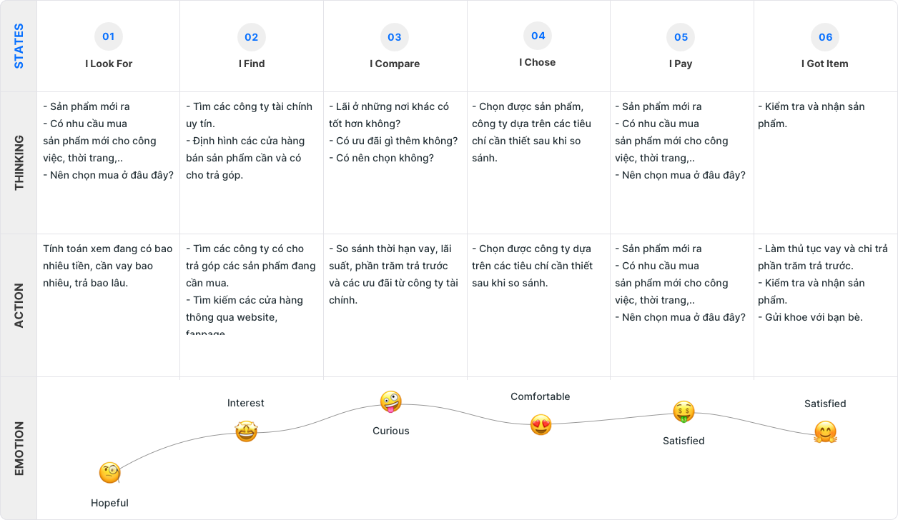
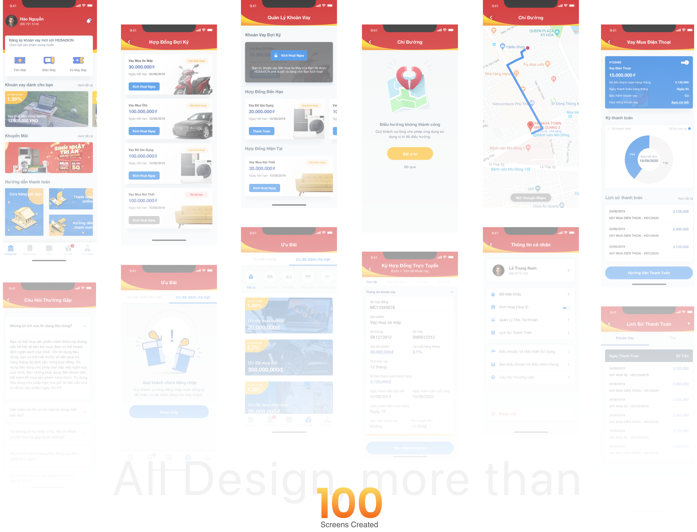

Overview
The problem
HD Saison originated 100% of its loans in-branch — the only lender in its five-company peer set with no digital path at all, in a market growing 23.7% a year published
The expectation
Every loan started at a counter
HD Saison is a joint venture between HDBank and Credit Saison, and it is very good at one thing. It held the highest motorbike-loan share in Vietnam — 41% in 2022, up from 34% the year before published — sold in person, at more than 16,000 dealer counters, to over 6 million customers published.
The brief I was handed listed four things to build: electronic signing, loan management, payment, and remarketing. Four goals, equal weight, no order given. My job as briefed was to design them.
Discovery ran about three months, from kickoff in June 2021 to the first interactive prototype in September. Mapping the origination process end to end is where that brief started to come apart. Borrowing took 3 to 5 hours across four stages and eight separate signatures client-reported — and at every one of those stages the customer was physically present. Nobody complains about this. Borrowers treat it as simply how borrowing works. It surfaces instead as people giving up at the counter, and as a repeat-borrow rate quietly falling while nobody could say why.

UX Research Findings
I benchmarked the five highest-traffic lenders in the segment, and the number that came back reframed the whole engagement.
Sixteen licensed companies. Three of them hold 80%.
Share of Vietnam's consumer lending market, 2021
- FE Credit 52%
- Home Credit 17%
- HD Saison 11%
- The other 13 20%
The consumer finance market grew 23.7% in 2021, on a five-year CAGR of 15.1%. HD Saison was the third-largest lender in the country — and the only one of the three you could not reach without walking into a building.
State Bank of Vietnam and FiinGroup figures, reported March 2021.
Insight
HD Saison
The third-largest lender in the country. Every loan began at a counter, which made walking in the only way in.
One dot = two loans in a hundred
- Originated online
- 0%
- Max loan
- 100M VND
- Visits / month
- 116K
Chart information
HD Saison, the subject of this case study. Originated online: 0%. Max loan: 100M VND. Web visits: ~116K a month estimated.
| Lender | Offline origination | Max loan | Monthly web visits estimated |
|---|---|---|---|
| JACCS | 66% | 80M VND | 38K |
| FE Credit | 78% | 70M VND | 1.07M |
| Home Credit | 82% | 200M VND | 431K |
| EasyCredit | 86% | 100M VND | 62K |
| HD Saison | 100% | 100M VND | 116K |
Industry challenges
Challenge 01
A concentrated field. Sixteen licensed companies, three of them holding 80% of the market. Being third-largest and single-channel is not a small disadvantage in a field that shape — it is a ceiling on how far the company can grow without changing how customers reach it.
Challenge 02
An unsettled legal picture for signing. Whether an OTP-authenticated confirmation could stand in for a wet signature on a consumer loan contract was the single largest risk in the project — and the benchmark answered it, because four competitors were already originating online under the same regime.
Challenge 03
A dealer network that could not be bypassed. The counter was the company's strongest asset — 16,000 dealer points and the highest motorbike-loan share in Vietnam. Any digital path had to add a second door without giving retail partners a reason to treat the app as competition.
A company growing that fast, in a field that concentrated, with exactly one way for a customer to reach it, was not at an incremental disadvantage. It had a ceiling.
And here is what the benchmark did to the brief. Go back to the four goals and ask what each one assumes. Loan management, payment and remarketing all assume somebody is already a customer — which, at HD Saison, means somebody who has already stood at a counter for five hours and signed eight times. Three of the four goals were downstream of a bottleneck nobody had named, and the fourth one was the bottleneck.
That is not a brief with four items. It is a brief with one, and a sequencing problem.
Why remarketing had to go first
Reordering a client's stated priorities is the part of this project I'd be asked about in an interview, so here is the reasoning in full, including what it cost.
Options
All four in parallel. Build the brief as written. Buys client satisfaction, ships four half-features, and leaves the counter exactly where it was.
Servicing first. Loan management and payment for existing borrowers, origination later. Lower risk, no legal dependency — and it serves only the customers who already got through the bottleneck.
Origination first. Electronic signing as the unlock, then self-serve servicing, remarketing deferred. Highest legal and integration risk. The only option that moves the 100%.
Criteria
Does it move offline origination? Is OTP signing legally viable in this regime? Does the dealer network survive it — because the counter was the company's strongest asset and breaking it would have cost more than the project was worth? And what can an existing borrower finally do without visiting?
What I chose
C, origination first. Electronic signing came first because nothing downstream functions without it — you cannot remove a branch visit that exists to collect eight wet signatures. The benchmark carried the risk argument for me: four competitors had already proven this worked here, and HD Saison, with the strongest counter presence in the market, had more to lose than any of them from staying single-channel.
What I killed
Remarketing. The client had ranked it equal to the other three. My argument was the one the benchmark had just handed me: remarketing to a base you can only reach in a branch spends acquisition budget on a channel that doesn't exist yet. Build the channel, then market through it.
Also cut — loan comparison and eligibility pre-check tooling. It added a decision step to a funnel whose defining problem was too many steps.
Which left one screen holding up the entire sequence.
Signing first, then everything downstream of it

Electronic signing collapses eight wet signatures into one OTP-authenticated confirmation. It is the only feature on this list whose absence would have invalidated all the others, which is why it went first despite carrying the most legal risk.
Home is the screen the rest of this list hangs off, and it took the most argument to settle. It gets its own section below.
Loan management puts balance, amount due, payment history and payment itself in one place rather than across separate journeys. This is the screen that turns a one-off borrower into a repeat one without a counter visit — the direct answer to the declining-returns finding from discovery.
The reminder ladder runs four states: four days, two days and one day before due, then overdue. Graduated rather than a single alert, because the research showed borrowers weren't ignoring due dates — they were losing track of them, which is a different problem and needs a different cadence.
Loan categories — cash, electronics, motorbike, travel — deliberately mirror the dealer taxonomy instead of introducing an app-native one, so that a customer who has borrowed at a counter recognises the product they already know. The app was building a second door, not replacing the building.
An interactive prototype was walked through before build, in September 2021.
The home screen, and what it puts first
Homepage
Home gives the top slot, unconditionally, to loans awaiting signature. Offers sit below them. This ordering was contested and the commercial case for putting promotions first is obvious — it loses to a simpler fact: an unsigned loan is revenue already earned and not yet booked.
Everything else on the screen follows from that. Loan categories mirror the dealer taxonomy the customer already knows — cash, electronics, travel — rather than introducing an app-native one, because the app was building a second door, not replacing the building.
New features
It shipped, and then I stopped looking
The app went live on the App Store in May 2022 and has shipped continuously since — v1.1.30 as of May 2026, ranked #36 in Finance in Vietnam published. Electronic signing is in HD Saison's production flow today: after approval, the customer signs the contract in the app. The self-serve surface argued for in discovery now extends to the public website, which carries online application, a repayment calculator and loan lookup. The second door exists.
What I cannot tell you is how many people walked through it. The two-hour approval target was set during discovery; I moved on before the measurement cycle and never saw the post-launch number. If I had owned it, the first metric would not have been approval time at all — it would have been the share of applications originated without a branch visit, because that is the only number that tests the argument this whole project was built on. After that: median approval time against the target, completion rate at the signing step, and repeat-borrow rate for app users against counter-only customers.
The company has grown from 6 million customers across 16,000 service points to over 15 million across 26,500 published. I claim none of that. Four years of growth has many authors, and the honest version is that a product I worked on is still running inside it. One number I do have to sit with: the app holds 3.0 ★ from roughly 2,500 ratings published. That is not a good score, and it is the first thing an interviewer will find.
Three things I would do differently, and they are the same mistake at three different points in the project: I let the client's framing set the order, the metric, and the finish line.
What I'd do differently
Benchmark first
I worked the client's four goals as a flat list for the first stretch of the project and only reordered them once the benchmark landed. That benchmark took days, not weeks. I should have run it in week one, before accepting the goal structure I was handed — the entire reframe was sitting in a table I hadn't built yet.
Pick the metric that tests you
I also let the outcome metric be approval time, which is a process measure the client already believed in. The measure that actually tested my reframe was off-counter origination, and I never got it instrumented. Choosing the metric your stakeholder is comfortable with is the quiet way a good reframe fails to survive launch.
Handoff isn't the end
And I treated handoff as the end of my involvement. Four years of App Store history exist for this product, and I can't tell you what happened in the first ninety days of it.